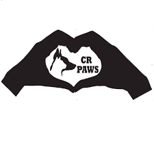

Campbell River P.A.W.S. (Partners for Animal Welfare Society)
What does CR P.A.W.S. do?
- Our area stretches from Northern Oyster River to Campbell River.
- A technique called TNR (Trap -> Neuter -> Return) to help control the populations of feral colonies.
- Helping barn cats who cannot stay in their current location by placing semi feral/feral cats for rodent control purposes.
- Solve problems with unwanted stray community cats
- Maintain cat colonies and provide shelters to help monitor their health. We also help socialize kittens and investigate newcomers.
- Assist in the returning of lost/found pets through our community group on facebook (Lost and Found animals of Campbell River)